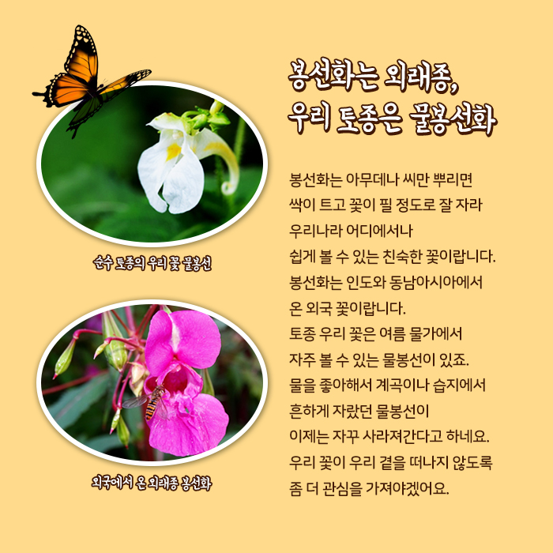
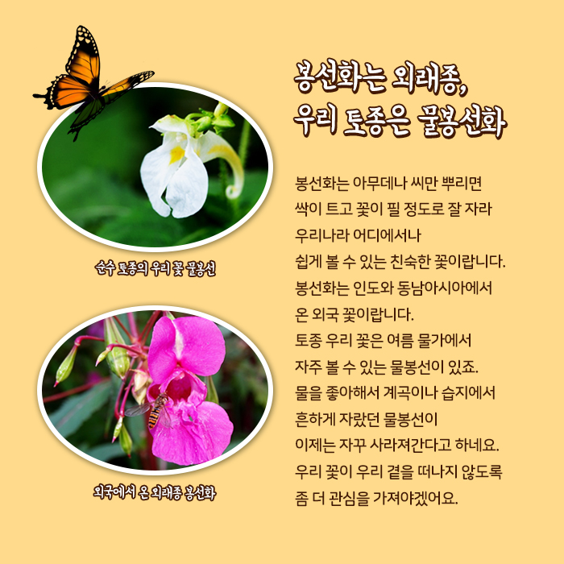

톡 건드리면 탁 터져요! 봉선화
* 분류 : 봉선화과 한해살이풀 * 꽃피는 시기 : 7~9월 * 다른 이름 : 봉숭아, 등잔화, 금봉화, 소도홍, 급성자 * 꽃말 : 나를 건드리지 마세요 * 원산지 : 인도, 말레이시아 등 동남아시아
꽃밭에서
작사 어효선 작곡 권길상
아빠하고 나하고 만든 꽃밭에 채송화도 봉숭아도 한창입니다. 아빠가 매어놓은 새끼줄 따라 나팔꽃도 어울리게 피었습니다.
손톱을 빨갛게 물들인 봉선화
여름철 뜨거운 햇살을 듬뿍 먹고 빨갛게 달아오른 봉선화를 똑똑 따다가 절구에 넣고 콩콩콩 찧어 손톱을 빨갛게 물들여본 적 있나요?
봉황을 닮아 봉선화
봉선화는 꽃이 핀 모습이 봉황을 닮아 붙여진 이름이랍니다. 봉선화를 부르는 이름은 정말 많답니다. 봉숭아부터 금봉화, 소도홍, 규중화, 금사화, 지갑화, 등잔화, 급급초, 길길초, 급성자 ...
봉선화 이름에 얽힌 옛날이야기
백제 때 한 여인이 선녀로부터 봉황 한 마리를 받는 태몽을 꾼 후 딸을 낳아 이름을 봉선이라 지었습니다. 봉선은 자라서 뛰어난 거문고 연주로 유명해졌는데, 덕분에 임금님 앞에서 연주하게 되었습니다. 그러나 이상하게도 연주를 마치고 돌아온 봉선은 갑자기 병을 앓게 됩니다. 어느 날 임금님이 그녀가 사는 동네를 지나간다는 말을 들은 봉선은 아픈 몸을 이끌고 나와 손끝에 피를 흘리면서 있는 힘을 다해 거문고를 연주하였습니다. 임금님은 그 모습을 가상하게 여겨 봉선의 손가락을 무명천에 백반을 싸서 감싸주었습니다. 그러나 끝내 봉선은 세상을 떠나고, 작은 봉선의 무덤에서는 빨간 꽃이 피어났습니다. 이 꽃으로 사람들은 손톱에 물들이기 시작했고, 꽃 이름을 봉선화라 불렀답니다.
≪참고문헌≫ 백화보(최영전, 창조사, 1963) 한국구비문학대한국정신문화연구원, 1980∼1988)
봉선화는 외래종, 우리 토종은 물봉선화
봉선화는 아무 곳에서나 잘 자라 우리나라에서 쉽게 볼 수 있는 친숙한 꽃이랍니다. 봉선화는 인도와 동남아시아에서 온 외국 꽃입니다. 토종 우리 꽃은 여름 물가에서 자주 볼 수 있는 물봉선이 있죠. 물을 좋아해서 계곡이나 습지에서 흔하게 자랐던 물봉선이 자꾸 사라져간다고 해요. 우리 꽃이 우리 곁을 떠나지 않도록 좀 더 관심을 가져야겠어요.
순수 토종의 우리 꽃 물봉선
외국에서 온 외래종 봉선화
봉선화 형태
꽃 - 꽃대가 있어 밑으로 처지고, 뒤에 꿀주머니가 있다. 수술은 5개이고 씨방에 털이 있다.
꽃잎 - 7~8월에 분홍, 빨강, 주홍, 보라, 하양 등 다양한 색깔로 핀다.
잎 - 어긋나기 하고 잎자루가 있으며, 양 끝이 좁고 가장자리에 톱니가 있다.
열매 - 타원형이고, 털이 있으며 익으면 터지면서 씨가 튀어나온다.
줄기 - 타원형이고, 털이 있으며 익으면 터지면서 씨가 튀어나온다.
손대면 타닥! 폭죽처럼 터지는 꼬투리
씨앗을 담고 있는 씨주머니를 꼬투리라고 해요. 봉선화의 꼬투리는 다섯 조각으로 나뉘어 있고, 겉에는 솜털이 나 있어요. 잘 익은 꼬투리는 살짝만 건드려도 탁하고 터지면서 안에 있던 씨앗들이 사방으로 튀어 나간답니다.
꼬투리는 왜 안으로 오므라들며 터질까?
꼬투리가 터질 때 안쪽으로 오므라드는데, 꼬투리 속에 남아 있는 씨앗을 긁어 밖으로 내보내기 위해서랍니다. 더 많은 씨앗을 더 멀리 퍼트리기 위해 저 작은 꼬투리 하나도 최선을 다하는 모습에 그저 놀라울 따름입니다. 이런 노력이 있었기에 봉선화가 우리 주위에 많이 피어날 수 있었나 봅니다. 손대면 톡 터지기 때문에 봉선화의 꽃말도 <나를 건드리지 마세요> 이에요.
하얀 꽃으로 물들여도 빨갛게 될까?
빨강, 주홍, 보라, 하얀... 어떤 색깔의 꽃으로 손톱 물을 들여도 빨갛게 된답니다. 정말 그럴까요?
봉선화 물들이기
① 봉숭아꽃과 잎사귀(5:1의 비율), 소금, 백반을 절구에 넣고 곱게 찧습니다. 백반은 색을 밝게 하고 소금은 착색이 잘되게 도와준답니다.
② 잘 찧은 꽃잎을 손톱 위에 올려놓고 봉숭아 잎사귀나 비닐로 잘 동여맵니다. 이때 봉숭아 물이 손가락에 번지지 않게 하려면 밀가루 반죽을 손톱 주위에 붙이거나 영양 크림 등을 미리 발라주세요.
③ 오래 기다릴수록 진하게 물드니까 잠자리에 들기 전에 하여 다음 날 아침에 비닐을 벗겨내는 것이 좋답니다.
봉선화 [서울시교육청 블로그 서울교육나침반]